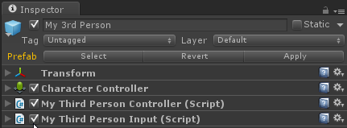

Control de personajes en Unity
{kind=link}
La capacidad de controlar las acciones de los personajes es una parte fundamental en los juegos, ya que aquellos que tienen una gran jugabilidad logran atraer a los jugadores de manera efectiva. Aquí voy a intentar crear un control básico para el movimiento de un personaje, que incluirá caminar y saltar.
Necesidad
Primero, vamos a considerar las necesidades específicas de nuestra interfaz de usuario:
- Caminar, puedes caminar sobre la superficie de un cuerpo rígido, controlado mediante las teclas de dirección arriba, abajo, izquierda y derecha. Por el momento, no se considera el proceso de aceleración o desaceleración.
- La velocidad de movimiento puede variar en diferentes direcciones, por ejemplo, es probable que la velocidad de retroceso sea más lenta que la de avance.
- Salto, controlado por el botón de saltar, el personaje se aleja del suelo con una velocidad inicial y luego cae lentamente de vuelta al suelo.
La idea general sería: utilizar la velocidad para describir el movimiento de una persona, calculando las componentes de la velocidad en cada dirección y finalmente multiplicarla por el tiempo para obtener el desplazamiento de la persona.
人物组件设置
Este es un texto que debe ser traducido al español. El texto original está en chino y se refiere a la configuración de un componente de personaje. Por favor, mantén el formato y el estilo original del texto. No agregues ningún otro carácter o información. Tu tarea es traducir el texto sin interpretarlo y mantener su significado original. Antes de escribir un guion para manipular y controlar personajes, es necesario hacer algunas tareas de preparación, configurando primero los componentes relevantes del personaje.
- Para controlar al personaje y que este tenga cierto comportamiento físico rígido, es necesario añadir un
Componente Controlador de Personaje. - Para una estructura más clara, separamos las operaciones relacionadas con los personajes y leemos la entrada para procesarla inicialmente y luego se envía el resultado al controlador de los personajes. Llamaremos a este script
MyThirdPersonInput.cs. - El script que realmente controla el movimiento del personaje se llama
MyThirdPersonController.cs.
La configuración resultante es la siguiente: 
{kind=link}
Entrada
La entrada consiste en arriba, abajo, izquierda, derecha y saltar. La dirección necesita ser normalizada:
// get movement from input
var direction = new Vector3(Input.GetAxis("Horizontal"), 0,
Input.GetAxis("Vertical"));
if (direction != Vector3.zero)
{
// constrain length to [0, 1]
var directionLength = direction.magnitude;
directionLength = Math.Min(1, directionLength);
direction = direction.normalized * directionLength;
}
person.inputMoveDirction = direction;
person.inputJump = Input.GetButton("Jump");
````
##**Descripción de movimientos y saltos**
Necesitamos usar algunas variables para describir las acciones de los personajes, como la velocidad de movimiento, la velocidad de salto, etc. El movimiento se describe con las siguientes variables:
```c#
[System.Serializable]
public class Movement
{
public float forwardSpeed = 5F;
public float backwardSpeed = 5F;
public float sidewardSpeed = 5F;
}
public Movement movement = new Movement();
[System.Serializable] se utiliza para exponer estos parámetros en el Inspector. La descripción del salto es la siguiente:
[System.Serializable]
public class Jumping
{
public bool enable = true; // true if can jump
public float jumpSpeed = 5F; // original speed when jump
public float gravity = 10F;
public float maxFallSpeed = 20F;
public bool jumping = false; // true if now in the air
}
public Jumping jumping = new Jumping();
分解速度
La velocidad de descomposición en español. Para facilitar la descripción del movimiento en diferentes direcciones, se dividen las direcciones en tres componentes: adelante-atrás, izquierda-derecha, arriba-abajo y se resuelven por separado.
La velocidad antes y después es diferente, se determina según el valor positivo o negativo.
La velocidad es igual en ambos lados:
La dificultad radica en determinar el estado actual del personaje antes de saltar:
- Si ya estás en el aire, calcula la velocidad utilizando la gravedad.
- Si estás en el suelo:
-
- Si se presiona la tecla de salto, la velocidad será la velocidad inicial de salto.
-
- De lo contrario, la velocidad en dirección y es cero.
if (!isOnGround)
{
yVelocity = Math.Max(yVelocity - jumping.gravity * Time.deltaTime,
-jumping.maxFallSpeed);
}
else
{
if (jumping.enable && inputJump)
{
yVelocity = jumping.jumpSpeed;
}
else
yVelocity = 0F;
}
Actualizar la ubicación de los personajes
La velocidad calculada se supone que es la velocidad desde este fotograma, por lo que la velocidad para calcular la posición de este fotograma debería ser la calculada en el fotograma anterior. Por lo tanto, antes de actualizar la velocidad, primero calcula la nueva posición del personaje.
// move to new position
var collisionFlag = controller.Move(velocity * Time.deltaTime);
isOnGround = (collisionFlag & CollisionFlags.CollidedBelow) != 0;
controller.Move retornará CollisionFlags para indicar el estado de la colisión, mediante este estado se puede determinar si el personaje está o no en el suelo.
def suma(a, b): return a + b
resultado = suma(3, 5) print(resultado)
La traducción al español del texto sería:
def suma(a, b): return a + b
resultado = suma(3, 5) print(resultado)
MyThirdPersonInput.cs:
using UnityEngine;
using System;
using System.Collections;
[RequireComponent(typeof(MyThirdPersonController))]
public class MyThirdPersonInput : MonoBehaviour {
private MyThirdPersonController person;
void Awake()
{
person = GetComponent<MyThirdPersonController>();
}
// Update is called once per frame
void Update ()
{
// get movement from input
var direction = new Vector3(Input.GetAxis("Horizontal"), 0,
Input.GetAxis("Vertical"));
if (direction != Vector3.zero)
{
// constrain length to [0, 1]
var directionLength = direction.magnitude;
directionLength = Math.Min(1, directionLength);
direction = direction.normalized * directionLength;
}
person.inputMoveDirction = direction;
person.inputJump = Input.GetButton("Jump");
}
}
MyThirdPersonController.cs:
using UnityEngine;
using System;
using System.Collections;
public class MyThirdPersonController : MonoBehaviour {
// The current global direction we want the character to move in.
[System.NonSerialized]
public Vector3 inputMoveDirction = Vector3.zero;
// Is the jump button held down? We use this interface instead of checking
// for the jump button directly so this script can also be used by AIs.
[System.NonSerialized]
public bool inputJump = false;
[System.Serializable]
public class Movement
{
public float forwardSpeed = 5F;
public float backwardSpeed = 5F;
public float sidewardSpeed = 5F;
}
public Movement movement = new Movement();
[System.Serializable]
public class Jumping
{
public bool enable = true; // true if can jump
public float jumpSpeed = 5F; // original speed when jump
public float gravity = 10F;
public float maxFallSpeed = 20F;
public bool jumping = false; // true if now in the air
}
public Jumping jumping = new Jumping();
private CharacterController controller;
private Vector3 velocity = Vector3.zero;
private bool isOnGround = true;
// Use this for initialization
void Start ()
{
controller = GetComponent<CharacterController>();
}
// Update is called once per frame
void FixedUpdate()
{
// move to new position
var collisionFlag = controller.Move(velocity * Time.deltaTime);
isOnGround = (collisionFlag & CollisionFlags.CollidedBelow) != 0;
// update velocity
float yVelocity = velocity.y;
velocity = Vector3.zero;
// x-z plane velocity
if (inputMoveDirction != Vector3.zero)
{
velocity.z = inputMoveDirction.z;
if (velocity.z > 0)
velocity.z *= movement.forwardSpeed;
else
velocity.z *= movement.backwardSpeed;
velocity.x = inputMoveDirction.x * movement.sidewardSpeed;
}
// y velocity
if (!isOnGround)
{
yVelocity = Math.Max(yVelocity - jumping.gravity * Time.deltaTime,
-jumping.maxFallSpeed);
}
else
{
if (jumping.enable && inputJump)
{
yVelocity = jumping.jumpSpeed;
}
else
yVelocity = 0F;
}
velocity = transform.rotation * velocity;
velocity.y = yVelocity;
}
}
Original: https://wiki.disenone.site/en
This post is protected by CC BY-NC-SA 4.0 agreement, should be reproduced with attribution.
Visitors. Total Visits. Page Visits.
Este post está traducido usando ChatGPT, por favor feedback si hay alguna omisión.